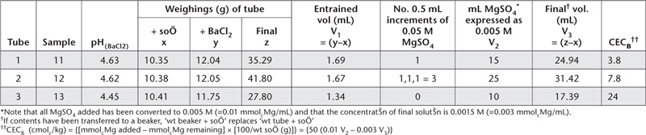

This method is similar to 15E1 except there is a pre-treatment with aqueous ethanol and aqueous glycerol. Pre-treatment is desirable when an accurate estimate of exchangeable bases is required when soil EC (1:5, soil/water; Method 3A1) exceeds about 0.3 dS/m. Note that aqueous glycerol, at the soil/solution ratio and extraction time of this method, can remove around 0.6–0.7% of finely divided gypsum from soil. If gypsum is not fully removed, it will subsequently dissolve in the 0.1 M BaCl2/0.1 M NH4Cl Extracting Solution, causing positive errors for exchangeable Ca2+. The estimate of compulsive CEC (CECB) is unaffected by the presence of gypsum.
60% Aqueous Ethanol (w/w)
As for Method 15A2.
20% Aqueous Glycerol
As for Method 15A2.
Transfer 2.00 g air-dry soil (<2 mm) into a suitable tared centrifuge tube (30–50 mL) and add 25 mL 60% Aqueous Ethanol. Seal and shake for 30 min. Centrifuge, remove the supernatant solution by suction and drain the tube on a piece of absorbent paper to remove excess solvent. Disperse the soil mechanically and add a second 25 mL of Aqueous Ethanol. Centrifuge, decant and drain as before.
Table 15.13. Example of worksheet to calculate CECB.

Repeat the process a third time using 20% Aqueous Glycerol. Weigh the centrifuge tube to determine the approximate volume of entrained solvents, then proceed as described in 15E1.
Report exchangeable bases (cmolc/kg), expressed on an oven-dry basis, after adjusting for entrained liquid from the pre-treatment to remove soluble salts (as in Method 15A2). Use the air-dry moisture to oven-dry moisture ratio to convert to an oven-dry concentration. Refer to Method 2A1 for guidance with regard to this soil moisture calculation.
If positive errors for exchangeable Ca2+ due to gypsum are expected, determine the ‘true’ value from the following equations, all in the same units:
then
“True” exchangeable Ca2+ = (Measured exchangeable Ca2+ – Non-exchangeable Ca2+)